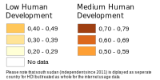

Development of Internet usage, population size and human development index in Africa between 2000 and 2016
Types of Internet usage development
Symbol legend
Do you want to know what the circle size stands for?
Resize the circle to see the corresp. population! The map needs to be in full extent for a valid population size
Human Development Index
